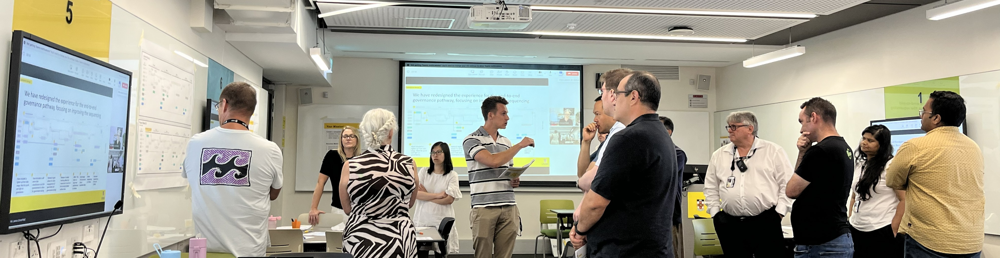
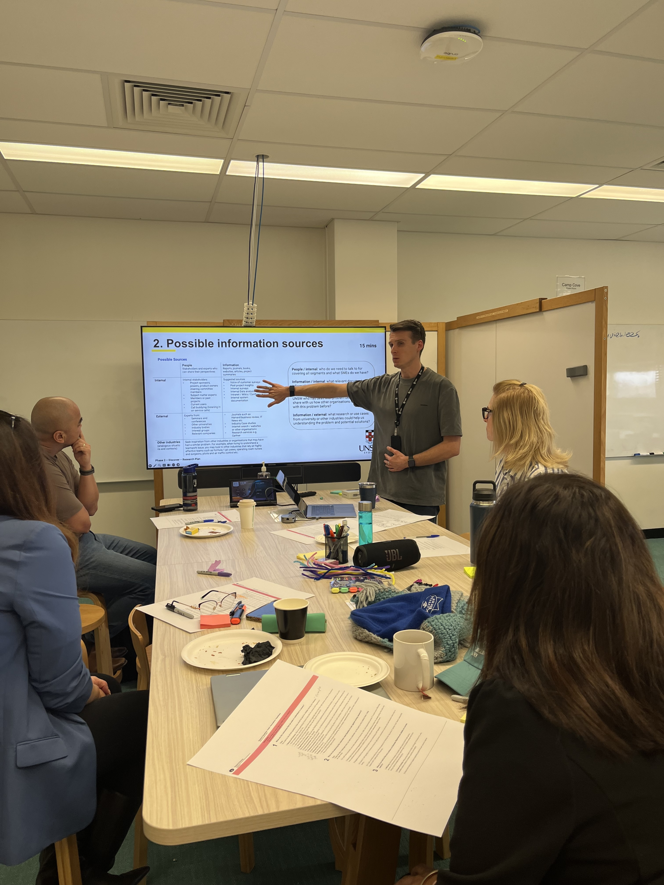
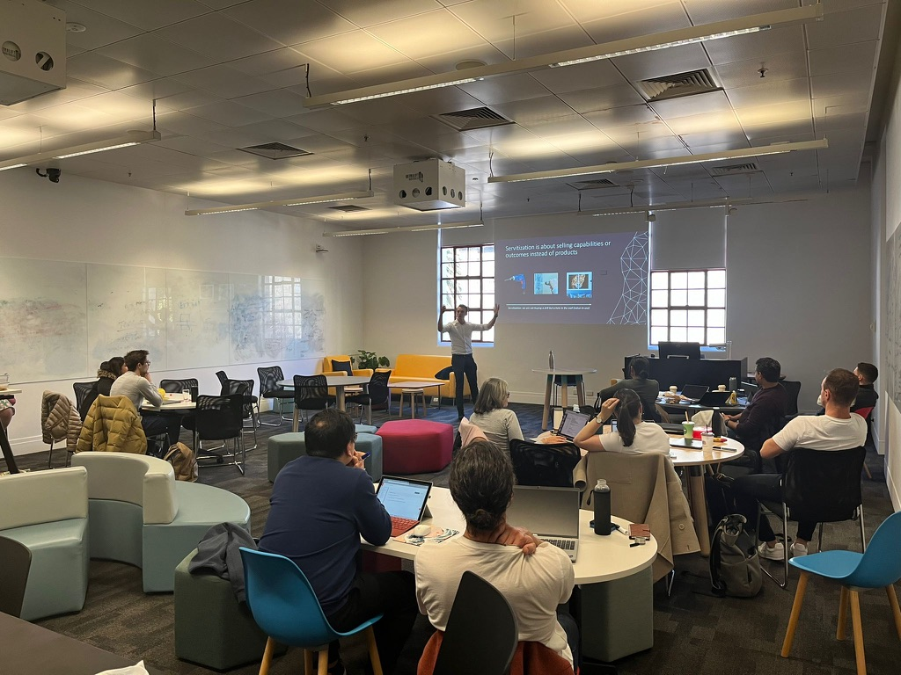

Case study 01
Transforming an end-to-end IT governance experience

At a glance
65%
reduction in governance planning time
- Context
- Higher Education / IT Governance
- Role
- Service Designer
- Duration
- 5 months
- Methods
- Process mapping · User research · Contextual inquiry · Workshop facilitation
Challenge
At one of Australia’s largest universities, IT initiatives had to pass through a central governance process covering cybersecurity, data, enterprise architecture, and other critical areas. Yet for teams across IT, the process felt confusing, ambiguous, and difficult to navigate. This led to project delays, strained collaboration between IT and business teams, and in some cases, stakeholders bypassing governance altogether.
Process
The project began by exploring both sides of the governance system: the teams responsible for oversight and the people navigating the process. Through process mapping, interviews, and contextual inquiry into how people interacted with governance forms and interfaces, we uncovered uncoordinated interdependencies between governance processes and systems that caused confusion and forced people to move in circles between steps. Furthermore, the governance journey was uniform for all projects, irrespective of size and risk, which caused unnecessary project overhead. Finally, the research revealed how technical jargon and unclear guidance made the process difficult to understand and complete for those without deep technical knowledge.
Outcomes and impact
We transformed the governance experience from a fragmented and difficult-to-navigate process into a coordinated and user-centred service. A new governance triage forum became the single entry point for IT initiatives, enabling governance owners to collaboratively assess projects and provide right-sized governance pathways based on project risk and complexity. Supported by a new digital platform, simplified processes, improved sequencing, and clearer language, the novel approach reduced complexity and made governance easier to understand and navigate. As a result, we reduced the time required to determine and plan governance activities by approximately 65%, enabling more IT initiatives to progress through governance in less time.
Case study 02
Using AI to automate cybersecurity compliance

At a glance
$75k
annual net savings, plus $500k in indirect savings opportunities identified
- Context
- Higher Education / Cybersecurity
- Role
- Service Designer
- Duration
- 8 weeks (incl. 6-day design incubator)
- Methods
- User interviews · Survey research · Rapid prototyping · Workshop facilitation
Challenge
The cloud platform team at an Australian university faced a growing challenge in maintaining cybersecurity compliance across cloud environments. Translating cybersecurity standards into code and responding to policy changes relied on labour-intensive manual processes, while compliance reports were often difficult to act upon by cyber security specialists and generated limited organisational engagement. The university wanted to explore how emerging technologies such as AI could reduce effort, improve compliance outcomes, and free up specialist staff for higher-value work.
Process
We delivered the project as a six-day design incubator. Through stakeholder interviews, workflow mapping, and collaborative workshops, we identified pain points across compliance management, reporting, and standards implementation. We then translated the most promising solution concepts into prototypes, which were tested and refined with stakeholders. This approach enabled us to move from problem discovery to validated concepts within a single week.
Outcomes and impact
The incubator resulted in a validated AI-enabled automation concept progressing to implementation. The solution automated the translation of cybersecurity standards into code, significantly reducing the manual effort required to maintain compliance. The concept demonstrated projected annual net savings of approximately $75,000 and identified a further $500,000 in indirect savings opportunities across cloud operations. In addition to the financial benefits, the solution improved responsiveness to policy changes and enabled specialist teams to focus on more strategic work.
Case study 03
Aligning seven organisations to deliver a new service proposition

At a glance
75%
reduction in spare part reproduction lead time
- Context
- Manufacturing / Operations
- Role
- Strategic Advisor
- Duration
- 12 months
- Methods
- User interviews · Affinity mapping · Agile ways of working · Workshop facilitation
Challenge
A manufacturer had developed a new Spare Parts-as-a-Service proposition to help customers in the rail infrastructure sector reproduce obsolete spare parts on demand. Delivering the service required coordinating multiple manufacturing, technology, and research partners. However, fragmented workflows, unclear ownership, and limited process visibility created significant inefficiencies across the service ecosystem, extending reproduction lead times to 12 weeks. As a result, customer satisfaction declined, churn increased, and the long-term viability of the service proposition came under pressure.
Process
The project focused on improving collaboration across the service ecosystem responsible for reproducing obsolete spare parts. Through stakeholder interviews, process analysis, and multiple collaborative workshops, we uncovered coordination challenges that prevented partners from effectively combining their expertise and resources. Together with the participating organisations, we co-designed, tested, and implemented a new collaboration structure. This new structure clarified ownership, improved knowledge sharing, increased process visibility, and established routines for planning and tracking progress.
Outcomes and impact
The redesigned collaboration model introduced agile ways of working that increased alignment, transparency, and accountability across the service ecosystem. By establishing clear ownership, structured coordination mechanisms, and shared visibility of progress, partners were able to combine their expertise more effectively and reduce unnecessary delays. As a result, we reduced spare part reproduction lead times by 75%, significantly improving customer responsiveness and strengthening the commercial viability of the Spare Parts-as-a-Service offering.